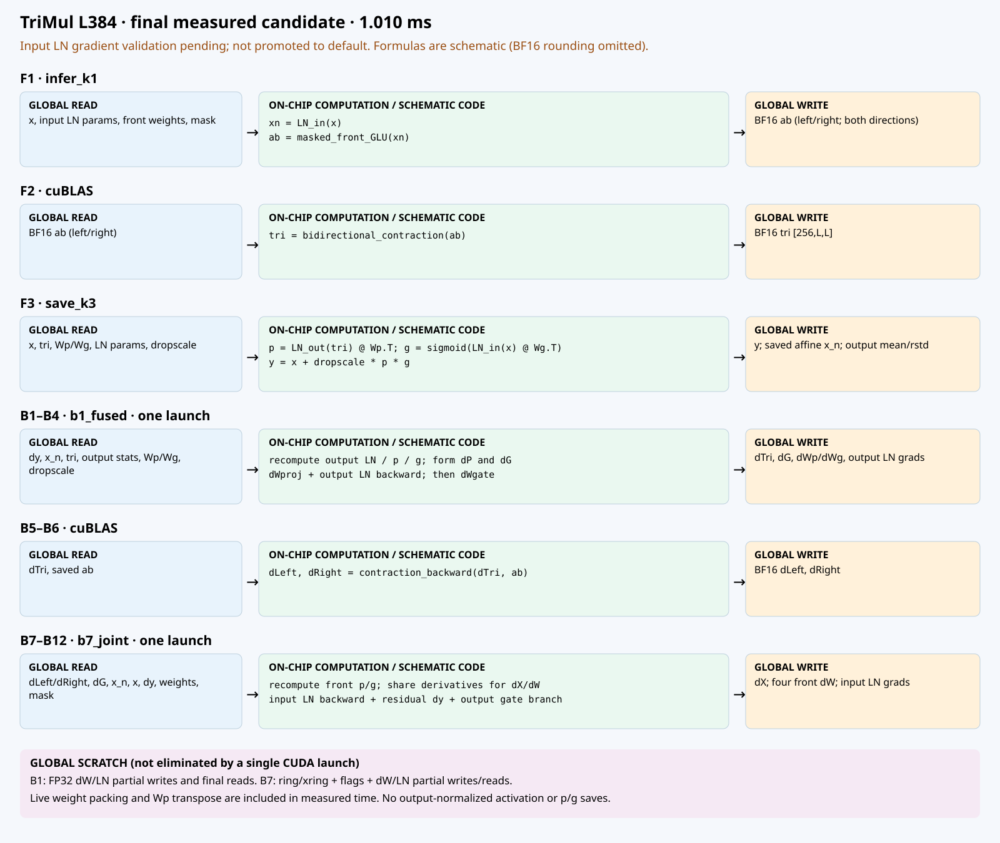

2026-09-23 · D64–512 학습 CUDA 업데이트 · 양방향 H100
L384 입력 LN gradient 엄격 검증 해결.
gate 미분의 FP32 곱셈 순서를 복원했습니다. 기존 한도5×10⁻⁶ 유지, 수정 후 최대3.55×10⁻⁷. 실패3case·추가24조합·memcheck·racecheck 통과. L384 개발 진입점에 적용했습니다. 원인·수정·검증 결과
PyTorch · cuEquivariance · 실제 v1.0.0 태그 · 로컬 2.0.0 비교 표
H100, L384/768. 최신 로컬 배선의 32개 모듈·길이·모드 실행을 확인했습니다. MSA module 1블록(OPM·PWA·MSA Transition·양방향 TriMul·Pair Transition)을 추가했고 MSA depth는 1024입니다. 공개 태그에는 후속 배선이 아직 반영되지 않았습니다. 양방향 TriMul 학습은 v1.0.0 대비 1.75×/1.72×. 단방향 TriMul·Token DiT 학습은 기존 경로이며 Token DiT sample1 추론은 PyTorch보다 느립니다. 아래 기존 표와 그림은 각각 표시된 시점의 기록입니다.
D128 L768 단일 B7 전환·strict 검증 완료. D64/256/384/512도 이전 CUDA보다 개선했으나 여전히 Triton보다 느립니다.
전체 측정표·배선·검증 보기2026-09-22 · 기존 hand-CUDA 대비. LN 부분합 병렬화 + dWs 연속 저장.
| 범위 | 이전 µs | 변경 µs | 시간 감소 |
|---|---|---|---|
| Transition backward · L384 | 443.840 | 429.312 | 3.27% |
| Transition backward · L768 | 1714.896 | 1703.360 | 0.67% |
| MiniPairformer fwd+bwd · L384 | 1565.920 | 1548.688 | 1.10% |
엄격한 gradient 검증24조건 + 블록8조건, memcheck/racecheck 통과. Transition 개발 작업 트리에 반영. 구조·NCU·전체 결과
job15592 · H100 L384/C128 · 학습 dropout25% · 같은 실행에서 직접 연결해 측정
| 구성 | 추론 | 학습 forward | 학습 fwd+bwd |
|---|---|---|---|
| PyTorch eager | 3.274ms | 3.313ms | 9.029ms |
| PyTorch compile | 1.722ms | 1.736ms | 5.211ms |
| cuEquivariance TriMul + PyTorch Transition | 0.977ms | 0.979ms | 3.461ms |
| cuEquivariance TriMul + 새 CUDA Transition | 0.664ms | 0.671ms | 2.750ms |
| 최신 TriMul + 새 CUDA Transition | 0.386ms | 0.412ms | 1.520ms |
최신 학습: PyTorch compile 대비 3.43배, cuEq + PyTorch Transition 대비 2.28배, cuEq + 동일 CUDA Transition 대비 1.81배. cuEq는 같은 양방향 수식의 primitives 조합이며 공개 단방향 TMU 두 번 호출이 아닙니다. 위 시간은 수정 전 기록입니다. 이후 LN gradient 제한을 해결했고 같은 실행에서 수정으로 인한 시간 변화는 약+0.24%였습니다.
H100 · L384/C128 · 양방향 TriMul + Transition · 학습 dropout25%.
| 구성 | 추론 | 학습 forward | 학습 fwd+bwd |
|---|---|---|---|
| 이전 Triton TriMul + 기존 Triton Transition | 0.600ms | 0.676ms | 2.522ms |
| 이전 H100 TriMul + 기존 Triton Transition | 0.578ms | 0.626ms | 2.470ms |
| 최신 TriMul + 기존 Triton Transition | 0.450ms | 0.467ms | 1.965ms |
| 최신 TriMul + 새 CUDA Transition | 0.406ms | 0.431ms | 1.582ms |
job15581 동일 실행, 전체 블록 직접 측정. 위 시간은 수정 전 기록이며, 이후 L384 LN gradient 엄격 검증을 통과했습니다. 이전 두 조합의 Transition은 Triton으로, 과거 전체 설치 환경을 재현한 비교가 아닙니다.
| 구성 | forward | backward | 전체 직접 측정 |
|---|---|---|---|
| 이전 개선 B7 조합 | 294.400 | 767.296 | 1065.824 |
| 구형 B7 검사 코드 | 294.592 | 923.712 | 1222.288 |
| 최신 B1 + 단일 B7 후보 | 294.384 | 712.624 | 1009.808 |
BF16 C128/H256 · dropout25% · mask/residual · job15526 · 전체6×300회 교차 CUDA graph.
전체는 분리 구간 합계가 아닙니다. optimizer/RNG 생성/CPU dispatch/compile 제외. 당시 기록입니다. 현재 L768은 위의 최신 D별 표를 참고하세요.
| 부분 | 정리 결과 |
|---|---|
| B1–B4 | dWproj 저장 지연 + TMA 캐시 정책 유지. L384/768 bit-exact·memcheck·racecheck 통과. |
| B7–B12 | K128/ring12/producer32/cluster2 단일 CUDA. gate 미분 곱셈 순서 수정 후 L384 전체 엄격 검증 통과. |
| 최종 측정 조합 | 최신 선택은 runs/trimul_training_current.py. 아래 L384 고정 표는 과거 기록입니다. |
| 기존 개발 진입점 | trimul_training_current.py: 다섯 폭, 두 길이를 지원하며 B7은 단일 커널입니다. |
| 출처 | Anthropic 추론 구현·TMA/WGMMA primitives를 계승한 학습 확장. |
각 행: global 입력 → 내부 계산 → global 출력. 단일 CUDA 호출에도 ring/partial scratch 왕복이 있습니다.

L384 입력 LN γ/β gradient 문제는 해결하고 전체 정확도를 재검증했습니다. L768 새 단일 B7 적용은 완료했습니다. 엔진 production 승격·SoL90 목표는 완료되지 않았습니다.
B1 선택 검증 · B7 선택 검증 · 추가70개 후보·NCU
보관본의 “현재/최신” 표기는 당시 시점의 기록입니다. 예전 SVG의 split B7는 최종 단일 B7 후보가 아닙니다.